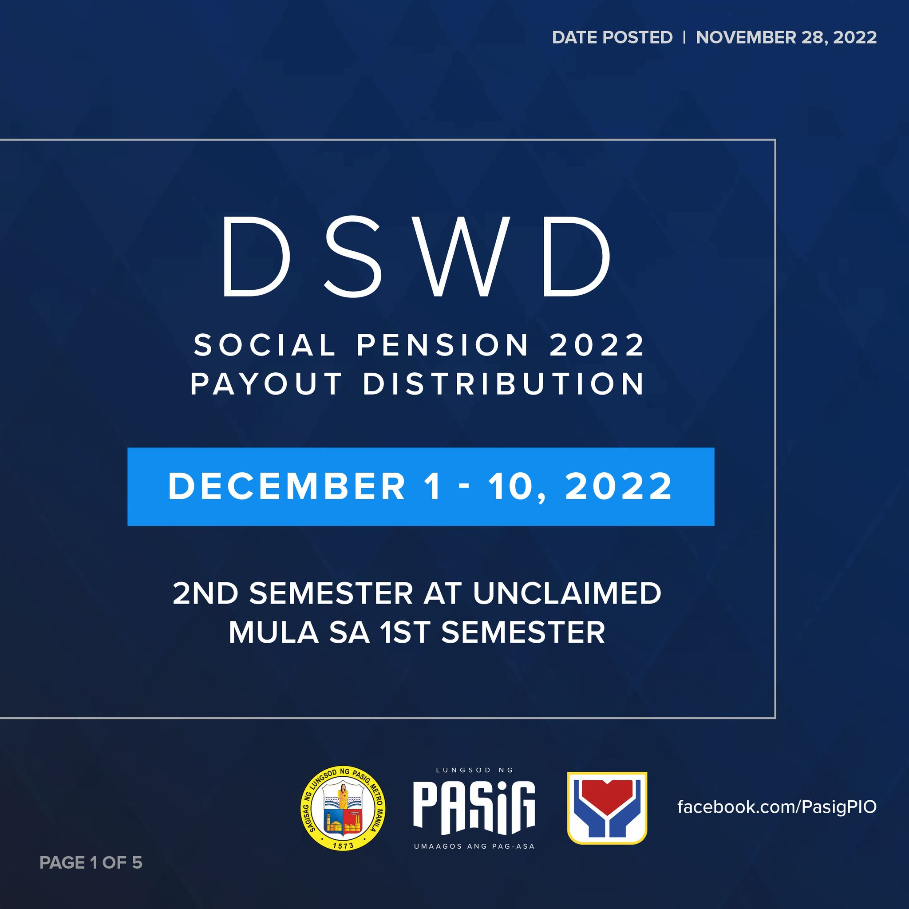

Magandang Balita po para sa ating mga indigent Senior Citizens na aplikanteng nasa waiting list para sa DSWD SOCIAL PENSION na na-interview at na-validate ng DSWD ngayong taon.
Magkakaroon po sila ng MANUAL PAYOUT para sa 2,300 Senior Citizens na qualified at naihabol sa 2nd Semester 2022.
Date: December 20, 2022
Venue: MEGA PARKING (Vaccination Site)
* MEGA PARKING - (Vaccination Site)
Time Schedule *Payroll No. *Table No.
MAHALAGANG PAALALA:
1. I-tsek po muna ang inyong PAYROLL NUMBER
AT NAKATALAGANG ORAS NG PAGPUNTA .
Mabilis po ang sistema ng payout ng DSWD kaya
iwasan po ang pagdating ng masyadong maaga na
syang nagpapatagal sa paghihintay ng seniors
2. Pagdating po sa venue ay may mga OSCOMMS
na nagttsek ng requirements at nagbibigay ng
Payroll at Table Number para alam nila kung saan
pipilang Table ng DSWD Personnel.
3. Sa mga may problema o katanungan po na
makakaantala sa pila, lumipat na po muna sa OSCA
INFORMATION TABLE upang ma-assist.
4. Kung hindi po nakalista ang pangalan, huwag na
pong magpunta upang maiwasan ang pagdami ng
tao sa venue. Tanging ang mga nakalista lamang
po ang maaaccomodate.
Muli po, inaasahan po natin ang pagsunod at
pakikiisa sa ating itinalagang ORAS BAWAT
BARANGAY upang maiwasan natin ang pagdagsa
ng sobrang tao sa ating venue.
SALAMAT PO! MALIGAYANG PASKO PASIG SENIORS!